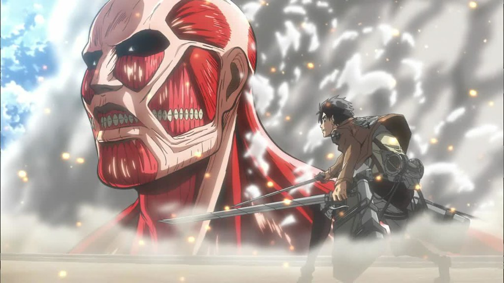

Attack on Titan S1 E5
Attack on Titan Season 1 Episode 5 titled "First Battle: The Struggle for Trost Part 1" was an amazing episode at finally hooking the viewer in and getting them used to Attack on Titan's carnage and sadness, the first major appearance of the Colossal Titan which would go on to plague the Survey Corps for three months after this also occurs which also sets the groundwork for Eren to discover his Titan and for the rest of the events of the show to occur. If it wasn't for this episode then AOT would not happen.
It also helped to let the survey corps understand that the Colossal and Armored titan were actually people, and likely people in the military. This is truly one of, if not the most important episode of the entire show and I believe that it is displayed incredibly and the screenart is amazing. I rate this episode FIVE STARS.
Demon Slayer: Mugen Train Arc
The Mugen Train arc was originally released in Theaters in 2020, but in 2021 it was released as episodes of the second season of Demon Slayer. It was rated 98% on rotten tomatoes, with an 8.3 on IMDB. The movie lives up to these expectations spectacularly, it shows the raw power of Rengoku and the emotions displayed in the final battle really set the movie into one of the greatest anime movies that ahve ever been created.
The plot throws moral dilemmas at the characters from left and right and it really makes you think what the correct choices and wrong choices are, the insight that we got on Tanjiro was essential for the plot, and the bravery that Nezuko showed helped to progress her character a ton, moving her from Tanjiro's kid sister, to a fellow demon slayer, determined to protect all humans. The plot was vital to laying the groundwork for the future including Tanjiro learning more about how powerful his Hinokami Kagura is. The combat was fluid as ever, and it truly deserves more than Five Stars, but that is all I have. I rate this movie FIVE STARS.
Tsuguko, Kanao Tsuyuri
This episode really helps to grow the character of Kanao Tsuyuri from simply an interesting character to a well developed character.
The plot of the episode shows Kanao Tsuyuri's past, talking about how she lived in poverty and starved as a child until she was being sent to be sold off. When her father was walking her to the seller he was stopped by Shinobu and Kanae and the pair of sisters saved Kanao from poverty by stealing Kanao from her father and running away while throwing money in the air. When they arrived back home, however, Kanao would not speak often and she wouldn't make even simple decisions without being told to do something. Kanao is given a coin to flip to make decisions for her which she holds onto at least until she meets Tanjiro. This was a beautiful episode and I rate the episode FOUR STARS.